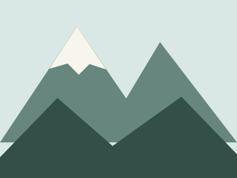

We would love
to see you.
This café is fictional. There is no real address, phone number or monitored inbox. A real company prototype should use only approved public contact information.
Illustrative hours
| Monday–Friday | 08:00–17:00 |
|---|---|
| Saturday | 09:00–16:00 |
| Sunday | Closed |

A few helpful answers.
Our illustrative menu includes an oat latte.
No. This learning website does not process bookings.
No. It is a fictional school example. The name, menu and story are used only for learning.